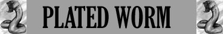

Spire Inferiori;
Assorbimento Minimo del Danno;

|
|
Ambiente/Habitat | Montagne, Colline e Caverne |
| Frequenza | Rara | |
| Organizzazione | Solitario | |
| Periodo di Attività | Qualsiasi | |
| Dieta | Carnivora | |
| Intelligenza | Non Intelligent (0) | |
| Punti Combattimento | Nessuno | |
| Tesoro | Nessuno | |
| Allineamento Dominante | Neutrale | |
| Numero di Apparizione | 1 | |
| Classe Armatura | 0 [10 base, -9 corazza, -1 destrezza] | |
| Movimento | 8 esagoni | |
| Dadi Vita | 7 (+ 7 punti ferita) | |
| Thac0 | Thac0 13 | |
| Numero di Attacchi | Uncino | |
| Danni | 1d10+2 (punta) | |
| Poteri Offensivi |
Istinto Predatorio; Spire Inferiori; |
|
| Poteri Difensivi |
Robustezza
Superiore
(+ 7 punti ferita); Assorbimento Minimo del Danno; |
|
| Poteri Generici | Nessuno; | |
| Vulnerabilità | Nessuna; | |
| Resistenza alla Magia | Nessuna | |
| Sensi | Senso Primordiale (21 metri); | |
| Dimensioni | Large (3 m. di lunghezza) | |
| Morale | Elite (14) | |
| Valore in Punti Esperienza | 1246 |
|
TIRI SALVEZZA DELLA CREATURA |
|||||||
| CORAGGIO | ENERGIA VITALE | MAGIA | MALATTIA | MENTE | RIFLESSI | ROBUSTEZZA | VELENO |
| 0 | 0 | 0 | 0 | 0 | 0 | 0 | 0 |
| 42 | 47 | 57 | 41 | 55 | 49 | 44 | 38 |
Descrizione
Il corpo di questo grosso verme lungo circa tre metri è interamente ricoperto di un robustissimo carapace costituito da grosse placche arancioni dai riflessi giallastri. Sotto la parte inferiore del corpo appare un grosso ed appuntito uncino ricurvo.
Combat
Questo verme si getta sulla preda più vicina tentando di abbatterla per poi nutrirsi del suo cadavere. Non pone in essere alcuna particolare strategia di combattimento.
ISTINTO
PREDATORIO
(Moderate Special Ability):
La creatura
possiede un forte istinto predatorio, per tale motivo costei riceve un
bonus costante di
+1
ai suoi tiri per colpire.
SPIRE INFERIORI
(Moderate Special Ability)
[UNCINO]:
Se la creatura colpisce
con l'attacco indicato una vittima di taglia non superiore alla propria, si avvolge attorno
alla stessa stritolandola. La vittima, quindi, subirà alla fine del round in
corso e di quelli successivi 1d8 danni da stritolamento automaticamente
(senza che sia richiesto alcun tiro per colpire). Chi è stritolato può compiere
azioni ma è considerato a tutti gli effetti incapacitato e non può spostarsi
dalla posizione occupata. Mentre effettua la stretta il serpente può comunque
continuare ad attaccare l'avversario con il suo morso (necessitando ovviamente
di un tiro per colpire). Se chi è stritolato desidera liberarsi, costui può
effettuare un'azione che impegna un intero round (facendo accumulare 1 punto
fatica) al termine del quale potrà effettuare un tiro salvezza su robustezza
modificato dalla forza in luogo della costituzione. Al tiro salvezza sarà applicato il
modificatore previsto dal serpente ed un'ulteriore penalità cumulativa di -3% per
ogni soglia di affaticamento raggiunto. Se il tiro salvezza fallisce, la vittima resterà stritolata subendo i relativi danni previsti;
se riesce, la vittima si libererà e non subirà i danni da stritolamento alla
fine del round. Ogni creatura che aiuti la vittima a liberarsi conferisce un
bonus pari al +10%,
costoro devono impiegare l'intero round, avere entrambe le mani libere ed
accumulare 1 punto fatica. Chi attacca la creatura in corpo a corpo ha il 30% di
possibilità di dirigere il proprio attacco contro la vittima, utilizzando 3
punti combattimento questa percentuale scende al 15% e l'attaccante si
considererà aver utilizzato nel round un colpo speciale di combattimento. Chi
attacca la creatura con armi da lancio o da tiro dovrà seguire le normali regole
del random shot ma la creatura stritolata si considererà di una taglia
superiore. Effetti e magie ad area che colpiscono la posizione occupata dalla
creatura o quella occupata dalla vittima avranno effetto su ambedue le creature
(anche se lanciate precedentemente allo stritolamento).
ROBUSTEZZA SUPERIORE (Typical Ability): Il fisico di questa creatura è estremamente robusto conferendole una robustezza superiore che le garantisce 7 punti ferita supplementari.
ASSORBIMENTO MINIMO DEL DANNO (Typical Ability): Il corpo della creatura è così compatto che la stessa riduce di - 1 danno ogni singolo attacco fisico (botta,taglio,punta) subito (indipendentemente dai dadi di danno tirati con l'attacco), questo beneficio non si estende ai danni diversi da quelli fisici (come fuoco e come i danni di molte magie i cui effetti non possono essere ricondotti a quelli di danni fisici).
Habitat/Society
Questo grosso verme predatore rappresenta un flagello. Essendo non intelligente non seleziona un territorio di caccia specifico aggirandosi tra le colline e le montagne in cerca di prede commestibili. Per tale motivo, non di rado, raggiunge villaggi o centri abitati attaccando il bestiame e gli abitanti.
Ecology
Il carapace di
questa creatura può essere utilizzato per costruire una corazza speciale [link].
In particolare, dal verme possono
ricavarsi pezzi per costruire una di queste corazze. La durezza del carapace
impone allo skinner una penalità di -2
alle relative prove. Il
valore delle piastre di carapace adeguatamente ripulite è pari a 150 monete d'oro.
Mystical Resource Sourge
(Carapace) Quantità:
1, Presenza 15% - Scuola di Magia:
Abjuration
- Qualità della Risorsa: Common.